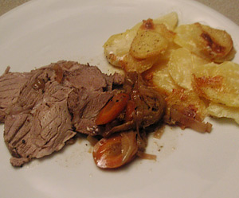

Schweinebraten
5,5 von 6Schweinebraten und Bratensauce verwende ich auch in anderen Rezepten als Zutat. Meist bleibt vom Schweinebraten ein Rest übrig, den man am nächsten Tag noch gut für ein zweites Gericht verwenden kann. In den Rezepten verwende ich dann als Zutat immer Schweinebraten nach dieser Zubereitung. Schweinebraten mit Senf einreiben und mit Pfeffer, Salz und Paprikapulver würzen. In einem Schmortopf Butterschmalz erhitzen und den Schweinebraten ringsum kräftig anbraten. Zwiebeln, Knoblauch und Suppengrün in kleine Würfel schneiden und kurz mitschmoren. Schweinbraten aus dem Schmortopf nehmen und auf einen Teller legen. Bratenfond mit Rotwein lösen. Schweinebraten wieder in den Bratenfond legen. Einen Deckel auflegen und den Schweinebraten auf niedriger Temperatur ca. 90 Minuten schmoren lassen. Schweinebraten aus dem Topf nehmen. Die Bratensauce mit einem Pürierstab fein pürieren und mit Fleischbrühe auffüllen. Bratensauce noch einmal zum Kochen bringen. Stärkemehl mit wenig kaltem Wasser verrühren und die Bratensauce damit binden. Als Hauptgericht kann man diesen Schweinebraten auch mit Gemüse und Nudeln, Kartoffeln oder Klößen servieren.
